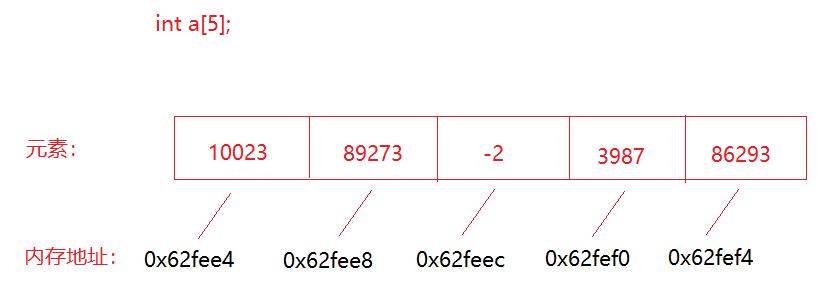

cpp快速入门
一、背景介绍¶
C++ 是一种通用的，面向对象的编程语言，由
Bjarne Stroustrup于1979年设计，是C语言的扩展，并提供了一些额外的功能，例如类，继承等。C/C++C ++在现代起着不可或缺的作用，因为许多现代系统（例如操作系统，Web浏览器，数据库等）在其代码库的至少某些部分中都包含C ++代码。而且，由于C ++的运行速度，它在性能至关重要的领域中非常有用。
1. 学习C++的几大理由¶
- C ++是世界上最受欢迎的语言之一，40年时间常年霸占TIOE 排行榜前列。
- C++ 加入了面向对象特性的支持，并且程序的运行速度是其他语言无法比拟的。
- 学习C++有助于我们理解上层编程语言许多背后的故事。（如：Java空指针异常，Python高阶函数）
- 嵌入式、无人驾驶、游戏引擎首选。
二、环境准备¶
1. 安装编译环境¶
GNU 系列（mingw ,cygwin） 、Clang 、 MSVC... ： visual studio 2019
GNU 是 linux (unix) 系统里面的编译的标准， C/C++
- mingw GNU for windows 裁剪了很多GNU的特性，组件。
- cygwin 和mingw一样，都是裁剪出来给Windows用，比gnu要多，功能要更大，更强。
visual studio （MSVC）。。。
2. 安装开发工具¶
开发工具种类繁多，有
VS|Dev-C++|code lite|clion|Qt Creator
三、HelloWorld¶
1. 入门示例¶
- 示例代码如下:
#include<iostream>
int main (){
std::cout << "hello world !" << std::endl;
return 0 ;
}
理解：
#include ： 引入输入输出库
int main(){} ： 主函数入口
std:: .... 输出打印
return 0 : 函数返回值，一般0 表示正常执行返回。
2. 注释¶
每一种语言都有注释，以便程序员对其编写的代码进行解释说明。c++采用
//和/* */实现单行和多行注释。
#include <iostream>
int main (){
// 我是c++的单行注释
std::cout << "hello world" << std::endl;
/*
我是c++的多行注释
我可以写多行
*/
std::cout << "hello world" << std::endl;
return 0 ;
}
四、数据类型和变量¶
1. 数据类型¶
与其他静态类型语言一样，C++也具备大多数语言的数据类型。除下表给出的数据类型之外，其实还有
short|long|long long等 。 关于数据类型占用的字节长度其实不用刻意的去背，c++提供sizeof()函数来获取某种数据类型占用的空间大小。静态类型语言： c++ / java 变量数据必须要声明类型
动态类型语言： python / javascript 不需要声明类型，由编译器|解释器推断。
| 数据类型 | 声明 |
|---|---|
| 整数类型 | int |
| 单精度浮点数 | float |
| 双精度浮点数 | double 能表示的小数位 更多， 占用的空间更大 。 |
| 字符 | char 单个字符，不是字符串 |
| 字符串 | string c++里面的字符串 ，C语言字符串char[] |
| 布尔 | bool |
#include <iostream>
int main(){
std::cout <<"int类型占用空间：" << sizeof(int) << std::endl;
std::cout <<"char类型占用空间：" << sizeof(char) << std::endl;
std::cout <<"double类型占用空间：" << sizeof(double) << std::endl;
std::cout <<"bool类型占用空间：" << sizeof(bool) << std::endl;
retrn 0 ;
}
2、变量¶
1. 声明和初始化¶
任何编程语言都会涉及数据的存取，把数据存放在内存中，从内存中取出存放的数据，为了更快的操作这些数据，一般会给他们起一个名称，以便未来能够操作数据，这些名字在编程语言里面，被称之为变量 。
c++ 是 强|静态 类型语言，任何变量在使用前必须先声明，并且在声明的时候必须要指定该变量的数据类型，即该变量未来能够存储的数据类型。
int main(){
//1. 先声明 ， 后赋值
int age ;
double price;
age = 10 ;
price = 20.3;
//2. 声明并立即初始化赋值
int age = 20 ;
return 0 ;
}
- 变量声明以及初始化常用手法：
int main(){
int age ; //未初始化
int age = 21 ; // C 方式初始化
int age (21); //构造方法初始化
int age {21} ; //c++ 11标准开始的方式
return 0 ;
}
- 我们不仅能查看数据类型占用的空间大小，也能查看变量占用的空间大小。
#include <iostream>
int main(){
int age = 18 ;
// 下面两句话打印出来的大小是一样的。
std::cout <<"age占用空间：" << sizeof(age) << std::endl;
std::cout <<"char类型占用空间：" << sizeof(char) << std::endl;
retrn 0 ;
}
2. 变量命名规则¶
- 可以包含字母 、 数字 和下划线
- 必须以字母或者下划线开始
注意：在C++中，大写字母和小写字母被认为是两个不同的字符。因此，sum和SUM是两个不同的变量名。一般地，变量名用小写字母表示，与人们日常习惯一致，以增加可读性。应注意变量名不能与C++的关键字、系统函数名和类名相同
| 有效命名 | 无效命名 |
|---|---|
| Age | 2020_Age |
| age | Age+1 |
| _age | $age |
| My_Age | My Age |
| Int | return |
3. 常量¶
常量其实和变量没有多大区别， 有名字， 占据存储空间，可以是任何的基本类型，但只有一点不同，常量的值不允许变更。C++中的常量的声明需要使用
const关键字，而python中的常量默认约定是全大写表示。
int main(){
const double pi {3.1415926};
const int months_in_year{12};
pi = 2.5 ; //将会出现编译错误
return 0 ;
}
五、输入和输出¶
任何编程语言都要输入和输出，python的输入输出是
input和scanf和printf， 而C++的相对要复杂些，它使用std::cin和std::cout来操作输入输出 。 C++的输入输出，需要导入iostream库 。
1. 输出¶
一般在输出的后面跟上
std::endl来表示输出结束，它除了含有换行的功能之外，还具备了刷新数据打印缓冲区的功能。
#include <iostream>
int main (){
//由于没有换行，两个单词会出于同一行。
std::cout << "Hello";
std::cout << " world";
//兼备换行的输出
std::cout << "Hello" << std::endl;
std::cout << " world" << std::endl;
//可以连续输出打印，这其实是一种叫做：链式调用的手法
std::cout << "Hello " << " World" << " , I love C++!"<< std::endl;
return 0 ;
}
2. 输入¶
输入旨在获取键盘的数据输入。 不过获取输入前的提示语句得使用
std:: cout来输出提示。
#include <iostream>
int main (){
std::cout << "请输入您的年龄："<<std::endl;
int age ;
std::cin >> age;
std::cout << "您的年龄是：" << age <<std::endl;
return 0 ;
}
六、条件与循环¶
1. 条件判断¶
1. if语句¶
条件判断即是生活中的对某个事物进行判断，比如：父子间对此次考试成绩进行约定，如果超过90分，则可以自由活动一天，如果超过80分，可以休息半天，如果低于80分，则要乖乖去 写作业。
#include <iostream>
int main (){
std::cout << "请输入此次考试的成绩：" << std::endl;
int score ;
std::cin >> score;
if( score > 90){
std::cout << "可以休息一天" << std::endl;
}else if(score > 80){
std::cout << "可以休息半天" << std::endl;
}else{
std::cout << "乖乖去写作业" << std::endl;
}
return 0 ;
}
2. switch语句¶
许多语言中都包含switch，比如：java 、javascript 、php 等，而python是个例外，python没有switch。，实际上
switch和if语句块很相似, 它是完全的等价条件判断，但是一旦满足某个case的条件，那么其他case就不会再进行判断。注意： switch判定的条件，只允许判定
char|int|枚举类型
#include <iostream>
int main (){
std::cout << "请输入此次考试的成绩评级" << std::endl;
char level ;
std::cin >> level;
switch (level){
case 'A':
std::cout << "优秀" << std::endl;
break;
case 'B':
std::cout << "良好" << std::endl;
break;
case 'C':
std::cout << "及格" << std::endl;
break;
case 'D':
std::cout << "仍需继续努力" << std::endl;
break;
default:
std::cout << "输入错误。" << std::endl;
break;
}
return 0 ;
}
2. 运算符操作¶
1. 关系运算符¶
表示大小、相等操作的运算符，python和c++表示方法是一样的。
| Operator | Python | C++ |
|---|---|---|
| equal | == | == |
| not equal | != | != |
| greater than | > | > |
| less than | < | < |
| greater than or equal | >= | >= |
| less than or equal | <= | <= |
2. 逻辑运算符¶
有时候需要对多个条件进行一起判断，比如：前面的考试约定，不仅要考察语文的成绩还要考察数学的成绩，不仅仅是单科成绩了。
| Operator | Python | C++ |
|---|---|---|
| 并且 | and | && |
| 或者 | or | || |
| 非（取反） | not | ! |
#include <iostream>
int main (){
int chinese_score ;
int math_score ;
std::cout << "请输入此次语文考试的成绩：" << std::endl;
std::cin >> chinese_socre;
std::cout << "请输入此次数学考试的成绩：" << std::endl;
std::cin >> math_score;
if( chinese_socre > 90 && math_score > 90){
std::cout << "可以休息一天" << std::endl;
}else if(score > 80 && math_score > 80){
std::cout << "可以休息半天" << std::endl;
}else{
std::cout << "乖乖去写作业" << std::endl;
}
return 0 ;
}
3. 三元运算符¶
一般来说，非真即假的情况下，如果表达式比较简单，通常会采用三元运算符来实现。在相比之下，c++的三元运算符比python的要简单些。比如下面的例子：如果考试成绩大于90，评为A ，否则评为B，此时针对一个条件的判断，只有两种结果，那么使用三元表达式在简洁程度上要胜过
if语句。
#include <iostream>
int main (){
int score;
std::cout << "请输入此次语文考试的成绩：" << std::endl;
std::cin >> score;
/*
//python的三元表达式：
result = 'A' if 100 > 90 'B'
print(result)
*/
//c++
char result = score > 90 ? 'A' : 'B';
std::cout << "您的语文成绩评级为：" << result <<std::endl;
return 0 ;
}
3. 循环控制¶
如果需要让某件事重复执行多次，那么循环操作再合适不过了。在c++里面，循环操作有：
while|do-while|for三种实现方式 。 比如模拟路口信号灯闪烁场景
1. while¶
#include <iostream>
#include <synchapi.h>
int main (){
int count = 0 ;
while(count < 10){
std::cout << "红灯还在亮着..." << std::endl;
//单位是毫秒
Sleep(1000);
cout++;
}
return 0 ;
}
2. continue 和 break¶
有时候我们需要对循环的每一次操作，都做一次过滤检查，满足条件的让循环跳过当前，进行下一次循环，或者直接退出循环。在大部分编程语言里面， continue和 break正扮演着这样的角色。比如下面打印1 到 20 的偶数。 如果打印到了16，则直接退出整个循环。
#include <iostream>
#include <synchapi.h>
int main (){
int number = 1 ;
while(number <= 20){
if(number == 16){
break;
}
//满足条件，表示当前的number是奇数。
if(number % 2 != 0 ){
continue;
}
std::cout << "当前打印的数字是： " << number << std::endl;
number++;
}
std::cout << "循环已结束! "<< std::endl;
return 0 ;
}
3. do-while¶
do-while结构与while差不多，区别只在于前者是上来先执行操作后判断，后者是先判断再执行循环操作
#include <iostream>
#include <synchapi.h>
int main (){
int count = 0 ;
do{
std::cout << "红灯还在亮着..." << std::endl;
//单位是毫秒
Sleep(1000);
cout++;
}while(cout < 10);
return 0 ;
}
4. for¶
在众多循环语句中，
for循环是使用频率最高的一种。
#include <iostream>
#include <synchapi.h>
int main (){
for(int cout = 0 ; cout < 10 ; cout ++){
std::cout << "红灯还在亮着..." << std::endl;
//单位是毫秒
Sleep(1000);
}
return 0 ;
}
练习¶
编程计算图形的周长。程序可计算圆形、矩形的周长，根据用户选择的图形类型来计算。，然后根据不同图形输入不同参数的值，计算图形的周长
while(){
1. 请输入您要计算的图形类型（1. 圆 , 2. 矩形 , 0 .退出程序）
1
请输入圆的半径
10
圆的周长是 ：xxx
2
请输入矩形的长度
请输入矩形的宽度
矩形的周长是.: xxxx
}
七、命名空间¶
假设这样一种情况，当一个班上有两个名叫 张三的学生时，为了明确区分它们，我们在使用名字之外，不得不使用一些额外的信息，比如他们的家庭住址，或者某些特征等等。
同样的情况也出现在 C++ 应用程序中。例如，您可能会写一个名为 a 的变量，在另一个可用的库中也存在一个相同的变量 a。这样，编译器就无法判断您所使用的是哪一个。
因此，引入了命名空间这个概念，专门用于解决上面的问题，它可作为附加信息来区分不同库中相同名称的函数、类、变量等。使用了命名空间即定义了上下文。本质上，命名空间就是定义了一个范围。
1. 使用using指令¶
可以使用 using namespace 指令，这样在使用命名空间时就可以不用在前面加上命名空间的名称。这个指令会告诉编译器，后续的代码将使用指定的命名空间中的名称。
#include <iostream>
using namespace std;
int main(){
count<<"hi c++" << endl;
return 0 ;
}
八、数组¶
c++的数组实际上和python的list差不多，都是具有下标（索引） ， 稍有不同的是，python的list不区分类型，而c++的数组必须是同一类型。
1. 声明和初始化¶
数组是一系列相同类型的元素，放置在连续的内存位置，数组中的元素都可以通过索引来单独操作它们。 若查看某个变量存储地址可以使用 取地址符
&

- 声明
仅仅声明，而没有初始化的数组，内部的元素无法得到保证，系统会随机进行赋值。
#include <iostream>
int main (){
int scores[5];
//这里遍历打印出来，数组的元素是随机的。
for(int s : scores){
std::cout << "s=" <<s << std::endl;
}
return 0 ;
}
- 初始化
int main(){
//数组类型 数组名称 [元素个数]{初始化列表}
//1. 声明后再初始化
int scores [5];
scores[0] = 11;
scores[1] = 22;
scores[2] = 33;
scores[3] = 44;
scores[4] = 55;
//2. 声明并初始化
int scores [5]{100,89,95,70,80};
int socres [10]{88,75}; //剩下的都会以0占位，只初始化了前两位
int socres [10]{0}; // 表示10个长度的数组，每个元素都是0
//3. 自动推算数组大小
int socres[]{22,33,44,55,66}; //数组长度没有指定，根据后面初始化长度来推断。
return 0 ;
}
2. 访问数组¶
- 获取数组中的某个元素
数组是具有下标（索引）的容器，可以使用下标 （索引）来获取 , 下标（索引）从
0开始。型如：数组名称[元素索引]
#include <iostream>
int main(){
//声明并初始化数组
int scores [5]{100,89,95,70,80};
std::cout<<"数组的第一个元素是: "<< scores[0]<<std::endl;
std::cout<<"数组的第二个元素是: "<< scores[1]<<std::endl;
std::cout<<"数组的第三个元素是: "<< scores[2]<<std::endl;
std::cout<<"数组的第四个元素是: "<< scores[3]<<std::endl;
std::cout<<"数组的第五个元素是: "<< scores[4]<<std::endl;
//越界，不会报错，但是输出内容不是我们想看到的
std::cout<<"数组的第一个元素是: "<< scores[5]<<std::endl;
//修改指定位置的元素
scores[0] = 66;
return 0 ;
}
- 遍历数组
c++的数组，并没有提供获取长度的方法，所以不能直接遍历。一种是直接指定遍历的长度，一种是通过代码计算出数组的长度 ,一种是使用c++11提供的基于范围的for循环
#include <iostream>
int main(){
//定义数组
int scores[]{100,95,97,88,85,80,75};
//直接指定数组
for(int i = 0; i < 7; i++){
std::cout << scores[i] << std::endl;
}
//手动计算数组长度
int length = sizeof(scores) / sizeof(int);
for(int i = 0 ; i < length; i++){
std::cout << scores[i] << std::endl;
}
//+++++++++++++++++++++++++++++++++++++++++++++++++++
//c++11 提供的for循环
for(int score : scores){
std::cout <<cores[i] << std::endl;
}
return 0 ;
}
数组是一种固定长度的容器，并且它存放的数据是采用一串连续的地址来存放的。